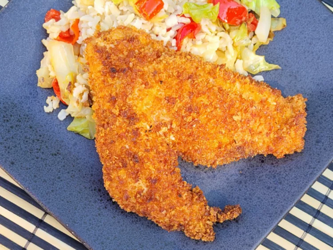

Panko Chicken

Description
This panko chicken recipe uses pounded chicken breasts making it quick and easy to cook. Use crushed, crisp rice cereal squares instead of panko crumbs for a gluten-free version!
Ingredients
- 1 pound boneless skinless chicken breasts
- 1 egg
- 1 cup panko crumbs
- 1/2 teaspoon garlic powder
- 1/2 teaspoon sea salt
- 1/4 teaspoon black pepper
Steps
- Pound chicken breasts, one at a time, in a resealable plastic bag until about 1/2-inch thick.
- Lightly beat egg in a shallow bowl. Combine panko crumbs, garlic powder, onion powder, salt, and pepper in a separate shallow bowl.
- Dip chicken breasts in egg until coated, then dip in panko mixture, pressing chicken into the crumbs until fully coated. Arrange in a single layer on a plate.
- Heat oil in a large skillet over medium-high heat. Add chicken and cook until golden brown and cooked through, about 2 to 3 minutes per side.